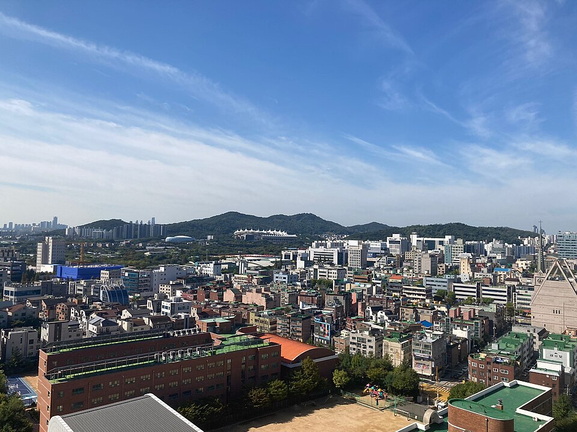

인천 남동구 검정고시 — 사회와 한국사를 묶어서 공부하는 법

검정고시를 준비하다 보면 암기 과목에서 지치는 지점이 옵니다. 사회를 한참 외우고 나서 한국사를 펴면 또 처음부터 외워야 할 것처럼 보이기 때문입니다. 그런데 이 두 과목은 겹치는 부분이 꽤 있어서, 순서를 바꾸면 한쪽이 다른 쪽을 밀어 줍니다. 인천 남동구 검정고시를 준비하면서 암기 과목에 시간이 너무 많이 들어가는 분들을 위해 정리했습니다.
한국사를 먼저, 사회를 나중에
두 과목을 다 해야 한다면 한국사를 먼저 잡는 편이 대체로 낫습니다. 한국사는 시간 순서라는 뼈대가 이미 있어서, 한 번 흐름을 세워 두면 세부 내용이 그 위에 붙습니다. 반면 사회는 정치·경제·지리·법 같은 여러 갈래가 병렬로 놓여 있어 기준선이 없으면 흩어집니다.
한국사에서 근현대 부분을 정리해 두면 사회의 정치·경제 단원을 읽을 때 "이게 언제 왜 생겼는지"가 이미 머리에 있습니다. 그러면 사회는 외우는 과목이 아니라 이해하는 과목에 가까워집니다. 순서를 반대로 하면 이 이점이 사라집니다.
연표 한 장을 먼저 만들고 시작합니다
한국사를 시작할 때 교재 1단원부터 순서대로 읽는 방식은 중간에 길을 잃기 쉽습니다. 대신 큰 시대 구분만 적힌 연표 한 장을 먼저 손으로 만들어 두시면 좋습니다. 종이 한 장이면 충분합니다.
그다음부터는 새로 배우는 사건을 그 연표 위 어디쯤에 놓을지 표시하면서 진행합니다. 이렇게 하면 지금 공부하는 내용이 전체에서 어디인지가 항상 보이기 때문에, 며칠 쉬었다 돌아와도 복귀가 빠릅니다. 연표가 없으면 매번 "내가 어디까지 했더라"부터 다시 찾게 됩니다.
겹치는 단원은 같은 주에 붙여서 처리합니다
사회와 한국사에는 다루는 소재가 겹치는 지점이 있습니다. 같은 소재를 사회에서는 제도와 개념으로, 한국사에서는 시기와 배경으로 다루는 식입니다.
이런 부분은 한 주 안에 붙여서 보는 것이 효율이 좋습니다. 한쪽에서 배경을 알고 다른 쪽을 보면 외울 것이 절반으로 줄어듭니다. 반대로 몇 달 간격을 두고 따로 보면, 두 번째로 볼 때 그게 전에 봤던 내용이라는 것조차 알아채지 못합니다. 어느 단원이 겹치는지는 쓰는 교재마다 구성이 달라서, 본인 교재 목차를 펴 놓고 한 번 표시해 두는 작업을 먼저 하시는 게 좋습니다.
암기 과목은 '회독 수'보다 '간격'입니다
같은 내용을 하루에 세 번 보는 것보다, 사흘에 걸쳐 한 번씩 보는 쪽이 오래 남습니다. 한 번에 몰아서 보면 그 순간에는 다 아는 것 같지만 일주일 뒤에 거의 남지 않습니다.
그래서 암기 과목은 진도를 빨리 빼는 것보다 다시 보는 날을 미리 정해 두는 것이 중요합니다. 오늘 본 단원을 며칠 뒤에 한 번, 그 뒤에 또 한 번 보도록 일정에 넣어 두면 회독 수가 적어도 점수는 더 잘 나옵니다. 과목당 60점을 넘기면 그 과목은 합격으로 남으므로, 완벽하게 외우는 것보다 흐릿하게라도 전 범위를 여러 번 훑는 쪽이 목적에 맞습니다.
인천 남동구에서 이렇게 함께합니다
저희는 1:1 맞춤 과외라 과목 순서와 진도 속도를 그 사람에 맞춰 다시 짭니다. 이미 아는 단원은 건너뛰고, 막히는 지점은 시간을 더 씁니다. 다시 볼 날짜까지 같이 정해 드려서 혼자 복습 계획을 세우실 필요가 없습니다. 인천광역시 남동구와 인근 지역은 방문 수업이 가능하고, 이동이 어려우시면 화상(줌) 수업으로 집에서 그대로 진행합니다.